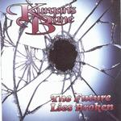

| Artist: | Kurgan's Bane |
| Title: | The Future Lies Broken |
| Label: | Fugitive Music CD-3.1415 |
| Length(s): | 49 minutes |
| Year(s) of release: | 2000 |
| Month of review: | [04/2001] |
| 2) | Just Look At Me Now | 6.35 |
| 3) | Warm Winter Nights | 4.38 |
| 4) | Frankie Five Angels | 4.12 |
| 6) | Feudal Tourniquet | 3.50 |
| 7) | Nap In E Minor | 1.18 |
| 8) | The Curtain And The Rose | 4.56 |
| 10) | Regina | 8.21 |
Just Look At Me Now is more or less in the same style, alternating between mid-tempo rock and quieter intermezzo's, both rather catchy. Again we find a guitar solo in the middle, and afterwards the band starts to fiddle. I am afraid that this doesn't do the song any good.
The next one up, Warm Winter Nights, is like its predecessor quite catchy, but this one is catchy throughout. Frankie Five Angels brings us back to guitar meanderings and the prominence of variation. Overt bass playing and lots of repetition here. Again it seems the track is extremely varied, but what happens for the most part is to take a number of small parts and put a number of each of them in a certain order. There is for me however rather little naturalness to the way this is done.
The second part of Vermin is Headless Mice, which is a sinister piece. A good shortish track, although the band can not leave well alone, and nervously start to vary again. This need for somewhat nervous variation continues into the next and final part.
Nap In E Minor is an acoustic piece, slightly classical in style, and nicely melodic as well without being cliche. The Curtain And The Rose is the natural continuation on piano. The rhythm guitars also barge in again, but the song is also very waltzy and playful.
Piano also opens Bad Blood, but in a darker way. Lisa Francis sings in a rather depressing fashion here, it is not a happy track. The interlude is rather nice and stately.
Regina is the closer of the album. Somewhat longer than most tracks, it does not differ overly much from the previous.